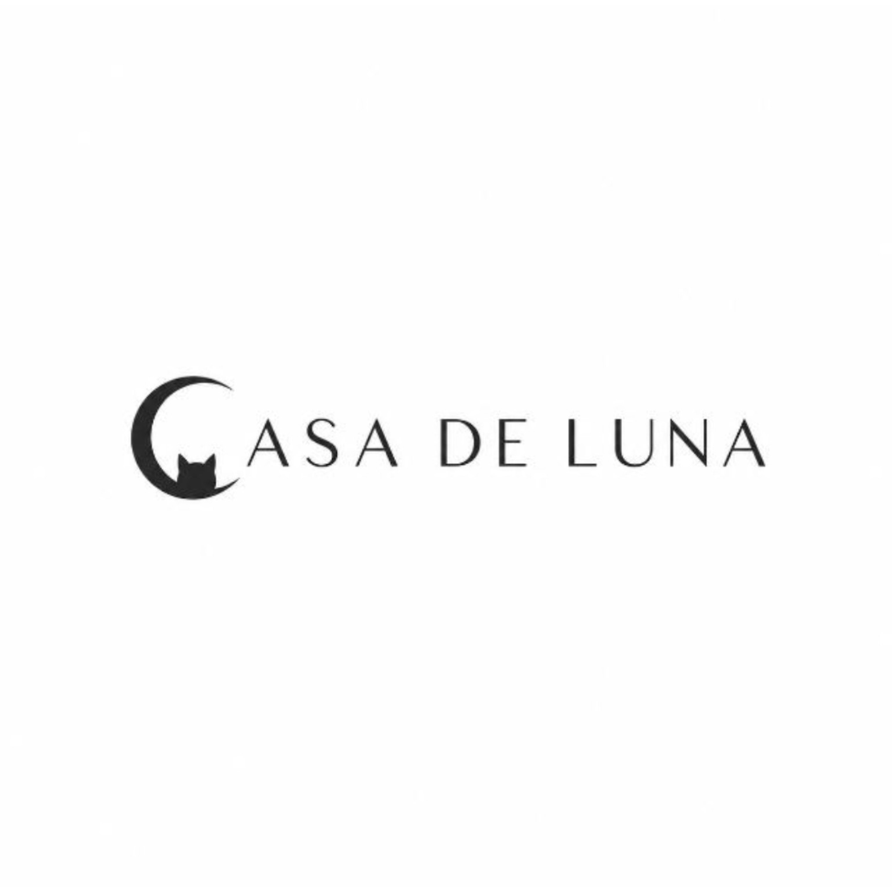

Books
Buku dan bacaan pilihan untuk menemani perjalanan merawat dan mencintai anabul.
Tanya koleksi →
CARE | MERCH | CONSULTANCY ♥ DukungCasa de Luna Shop
Shop sedang disiapkan sebagai pintu masuk untuk karya, barang layak pakai, dan pengalaman yang ikut mendukung kehidupan anabul.
Buku dan bacaan pilihan untuk menemani perjalanan merawat dan mencintai anabul.
Tanya koleksi →Pakaian second layak jual dan merchandise Casa de Luna. Barang yang masih baik dapat masuk ke pipeline Shop.
Tanya persiapan Shop →Kelas kreatif bersama Alfa Beta untuk belajar, berkarya, dan berbagi dampak.
Tanya kelas →Ikuti Instagram Casa de Luna untuk pengumuman koleksi, kelas, dan jadwal peluncuran.
Ikuti @Casadeluna19 ↗